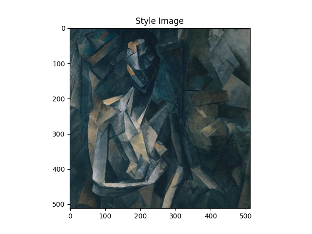
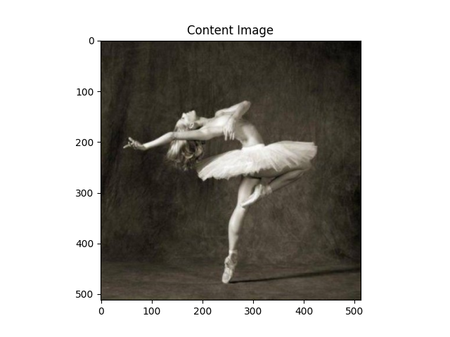

Note
Go to the end to download the full example code.
Neural Transfer Using PyTorch#
Created On: Apr 06, 2017 | Last Updated: Jan 19, 2024 | Last Verified: Nov 05, 2024
Author: Alexis Jacq
Edited by: Winston Herring
Introduction#
This tutorial explains how to implement the Neural-Style algorithm developed by Leon A. Gatys, Alexander S. Ecker and Matthias Bethge. Neural-Style, or Neural-Transfer, allows you to take an image and reproduce it with a new artistic style. The algorithm takes three images, an input image, a content-image, and a style-image, and changes the input to resemble the content of the content-image and the artistic style of the style-image.

Underlying Principle#
The principle is simple: we define two distances, one for the content (\(D_C\)) and one for the style (\(D_S\)). \(D_C\) measures how different the content is between two images while \(D_S\) measures how different the style is between two images. Then, we take a third image, the input, and transform it to minimize both its content-distance with the content-image and its style-distance with the style-image. Now we can import the necessary packages and begin the neural transfer.
Importing Packages and Selecting a Device#
Below is a list of the packages needed to implement the neural transfer.
torch,torch.nn,numpy(indispensables packages for neural networks with PyTorch)torch.optim(efficient gradient descents)PIL,PIL.Image,matplotlib.pyplot(load and display images)torchvision.transforms(transform PIL images into tensors)torchvision.models(train or load pretrained models)copy(to deep copy the models; system package)
import torch
import torch.nn as nn
import torch.nn.functional as F
import torch.optim as optim
from PIL import Image
import matplotlib.pyplot as plt
import torchvision.transforms as transforms
from torchvision.models import vgg19, VGG19_Weights
import copy
Next, we need to choose which device to run the network on and import the
content and style images. Running the neural transfer algorithm on large
images takes longer and will go much faster when running on a GPU. We can
use torch.cuda.is_available() to detect if there is a GPU available.
Next, we set the torch.device for use throughout the tutorial. Also the .to(device)
method is used to move tensors or modules to a desired device.
device = torch.device("cuda" if torch.cuda.is_available() else "cpu")
torch.set_default_device(device)
Loading the Images#
Now we will import the style and content images. The original PIL images have values between 0 and 255, but when transformed into torch tensors, their values are converted to be between 0 and 1. The images also need to be resized to have the same dimensions. An important detail to note is that neural networks from the torch library are trained with tensor values ranging from 0 to 1. If you try to feed the networks with 0 to 255 tensor images, then the activated feature maps will be unable to sense the intended content and style. However, pretrained networks from the Caffe library are trained with 0 to 255 tensor images.
Note
Here are links to download the images required to run the tutorial:
picasso.jpg and
dancing.jpg.
Download these two images and add them to a directory
with name images in your current working directory.
# desired size of the output image
imsize = 512 if torch.cuda.is_available() else 128 # use small size if no GPU
loader = transforms.Compose([
transforms.Resize(imsize), # scale imported image
transforms.ToTensor()]) # transform it into a torch tensor
def image_loader(image_name):
image = Image.open(image_name)
# fake batch dimension required to fit network's input dimensions
image = loader(image).unsqueeze(0)
return image.to(device, torch.float)
style_img = image_loader("./data/images/neural-style/picasso.jpg")
content_img = image_loader("./data/images/neural-style/dancing.jpg")
assert style_img.size() == content_img.size(), \
"we need to import style and content images of the same size"
Now, let’s create a function that displays an image by reconverting a
copy of it to PIL format and displaying the copy using
plt.imshow. We will try displaying the content and style images
to ensure they were imported correctly.
unloader = transforms.ToPILImage() # reconvert into PIL image
plt.ion()
def imshow(tensor, title=None):
image = tensor.cpu().clone() # we clone the tensor to not do changes on it
image = image.squeeze(0) # remove the fake batch dimension
image = unloader(image)
plt.imshow(image)
if title is not None:
plt.title(title)
plt.pause(0.001) # pause a bit so that plots are updated
plt.figure()
imshow(style_img, title='Style Image')
plt.figure()
imshow(content_img, title='Content Image')
- 
- 
Loss Functions#
Content Loss#
The content loss is a function that represents a weighted version of the
content distance for an individual layer. The function takes the feature
maps \(F_{XL}\) of a layer \(L\) in a network processing input \(X\) and returns the
weighted content distance \(w_{CL}.D_C^L(X,C)\) between the image \(X\) and the
content image \(C\). The feature maps of the content image(\(F_{CL}\)) must be
known by the function in order to calculate the content distance. We
implement this function as a torch module with a constructor that takes
\(F_{CL}\) as an input. The distance \(\|F_{XL} - F_{CL}\|^2\) is the mean square error
between the two sets of feature maps, and can be computed using nn.MSELoss.
We will add this content loss module directly after the convolution
layer(s) that are being used to compute the content distance. This way
each time the network is fed an input image the content losses will be
computed at the desired layers and because of auto grad, all the
gradients will be computed. Now, in order to make the content loss layer
transparent we must define a forward method that computes the content
loss and then returns the layer’s input. The computed loss is saved as a
parameter of the module.
class ContentLoss(nn.Module):
def __init__(self, target,):
super(ContentLoss, self).__init__()
# we 'detach' the target content from the tree used
# to dynamically compute the gradient: this is a stated value,
# not a variable. Otherwise the forward method of the criterion
# will throw an error.
self.target = target.detach()
def forward(self, input):
self.loss = F.mse_loss(input, self.target)
return input
Note
Important detail: although this module is named ContentLoss, it
is not a true PyTorch Loss function. If you want to define your content
loss as a PyTorch Loss function, you have to create a PyTorch autograd function
to recompute/implement the gradient manually in the backward
method.
Style Loss#
The style loss module is implemented similarly to the content loss module. It will act as a transparent layer in a network that computes the style loss of that layer. In order to calculate the style loss, we need to compute the gram matrix \(G_{XL}\). A gram matrix is the result of multiplying a given matrix by its transposed matrix. In this application the given matrix is a reshaped version of the feature maps \(F_{XL}\) of a layer \(L\). \(F_{XL}\) is reshaped to form \(\hat{F}_{XL}\), a \(K\)x\(N\) matrix, where \(K\) is the number of feature maps at layer \(L\) and \(N\) is the length of any vectorized feature map \(F_{XL}^k\). For example, the first line of \(\hat{F}_{XL}\) corresponds to the first vectorized feature map \(F_{XL}^1\).
Finally, the gram matrix must be normalized by dividing each element by the total number of elements in the matrix. This normalization is to counteract the fact that \(\hat{F}_{XL}\) matrices with a large \(N\) dimension yield larger values in the Gram matrix. These larger values will cause the first layers (before pooling layers) to have a larger impact during the gradient descent. Style features tend to be in the deeper layers of the network so this normalization step is crucial.
def gram_matrix(input):
a, b, c, d = input.size() # a=batch size(=1)
# b=number of feature maps
# (c,d)=dimensions of a f. map (N=c*d)
features = input.view(a * b, c * d) # resize F_XL into \hat F_XL
G = torch.mm(features, features.t()) # compute the gram product
# we 'normalize' the values of the gram matrix
# by dividing by the number of element in each feature maps.
return G.div(a * b * c * d)
Now the style loss module looks almost exactly like the content loss module. The style distance is also computed using the mean square error between \(G_{XL}\) and \(G_{SL}\).
class StyleLoss(nn.Module):
def __init__(self, target_feature):
super(StyleLoss, self).__init__()
self.target = gram_matrix(target_feature).detach()
def forward(self, input):
G = gram_matrix(input)
self.loss = F.mse_loss(G, self.target)
return input
Importing the Model#
Now we need to import a pretrained neural network. We will use a 19 layer VGG network like the one used in the paper.
PyTorch’s implementation of VGG is a module divided into two child
Sequential modules: features (containing convolution and pooling layers),
and classifier (containing fully connected layers). We will use the
features module because we need the output of the individual
convolution layers to measure content and style loss. Some layers have
different behavior during training than evaluation, so we must set the
network to evaluation mode using .eval().
cnn = vgg19(weights=VGG19_Weights.DEFAULT).features.eval()
Downloading: "https://download.pytorch.org/models/vgg19-dcbb9e9d.pth" to /var/lib/ci-user/.cache/torch/hub/checkpoints/vgg19-dcbb9e9d.pth
0%| | 0.00/548M [00:00<?, ?B/s]
1%| | 3.62M/548M [00:00<00:15, 37.8MB/s]
1%|▏ | 7.25M/548M [00:00<00:16, 35.2MB/s]
4%|▍ | 21.5M/548M [00:00<00:06, 84.5MB/s]
6%|▌ | 31.1M/548M [00:00<00:05, 90.7MB/s]
8%|▊ | 45.4M/548M [00:00<00:04, 110MB/s]
11%|█ | 59.1M/548M [00:00<00:04, 121MB/s]
13%|█▎ | 70.8M/548M [00:00<00:04, 118MB/s]
15%|█▌ | 83.2M/548M [00:00<00:03, 122MB/s]
18%|█▊ | 98.0M/548M [00:00<00:03, 132MB/s]
21%|██ | 115M/548M [00:01<00:03, 146MB/s]
24%|██▎ | 130M/548M [00:01<00:02, 147MB/s]
27%|██▋ | 145M/548M [00:01<00:02, 151MB/s]
30%|██▉ | 163M/548M [00:01<00:02, 162MB/s]
33%|███▎ | 179M/548M [00:01<00:02, 139MB/s]
35%|███▌ | 193M/548M [00:01<00:02, 143MB/s]
38%|███▊ | 210M/548M [00:01<00:02, 153MB/s]
41%|████ | 226M/548M [00:01<00:02, 135MB/s]
44%|████▎ | 239M/548M [00:01<00:02, 134MB/s]
48%|████▊ | 262M/548M [00:02<00:01, 164MB/s]
53%|█████▎ | 288M/548M [00:02<00:01, 188MB/s]
56%|█████▌ | 306M/548M [00:02<00:01, 171MB/s]
59%|█████▉ | 323M/548M [00:02<00:01, 159MB/s]
62%|██████▏ | 340M/548M [00:02<00:01, 164MB/s]
65%|██████▌ | 357M/548M [00:02<00:01, 165MB/s]
68%|██████▊ | 373M/548M [00:02<00:01, 168MB/s]
71%|███████ | 390M/548M [00:02<00:00, 168MB/s]
74%|███████▍ | 406M/548M [00:02<00:00, 165MB/s]
80%|███████▉ | 436M/548M [00:03<00:00, 210MB/s]
84%|████████▍ | 460M/548M [00:03<00:00, 220MB/s]
88%|████████▊ | 481M/548M [00:03<00:00, 217MB/s]
92%|█████████▏| 502M/548M [00:03<00:00, 180MB/s]
95%|█████████▍| 520M/548M [00:03<00:00, 183MB/s]
98%|█████████▊| 539M/548M [00:03<00:00, 187MB/s]
100%|██████████| 548M/548M [00:03<00:00, 157MB/s]
Additionally, VGG networks are trained on images with each channel normalized by mean=[0.485, 0.456, 0.406] and std=[0.229, 0.224, 0.225]. We will use them to normalize the image before sending it into the network.
cnn_normalization_mean = torch.tensor([0.485, 0.456, 0.406])
cnn_normalization_std = torch.tensor([0.229, 0.224, 0.225])
# create a module to normalize input image so we can easily put it in a
# ``nn.Sequential``
class Normalization(nn.Module):
def __init__(self, mean, std):
super(Normalization, self).__init__()
# .view the mean and std to make them [C x 1 x 1] so that they can
# directly work with image Tensor of shape [B x C x H x W].
# B is batch size. C is number of channels. H is height and W is width.
self.mean = torch.tensor(mean).view(-1, 1, 1)
self.std = torch.tensor(std).view(-1, 1, 1)
def forward(self, img):
# normalize ``img``
return (img - self.mean) / self.std
A Sequential module contains an ordered list of child modules. For
instance, vgg19.features contains a sequence (Conv2d, ReLU, MaxPool2d,
Conv2d, ReLU…) aligned in the right order of depth. We need to add our
content loss and style loss layers immediately after the convolution
layer they are detecting. To do this we must create a new Sequential
module that has content loss and style loss modules correctly inserted.
# desired depth layers to compute style/content losses :
content_layers_default = ['conv_4']
style_layers_default = ['conv_1', 'conv_2', 'conv_3', 'conv_4', 'conv_5']
def get_style_model_and_losses(cnn, normalization_mean, normalization_std,
style_img, content_img,
content_layers=content_layers_default,
style_layers=style_layers_default):
# normalization module
normalization = Normalization(normalization_mean, normalization_std)
# just in order to have an iterable access to or list of content/style
# losses
content_losses = []
style_losses = []
# assuming that ``cnn`` is a ``nn.Sequential``, so we make a new ``nn.Sequential``
# to put in modules that are supposed to be activated sequentially
model = nn.Sequential(normalization)
i = 0 # increment every time we see a conv
for layer in cnn.children():
if isinstance(layer, nn.Conv2d):
i += 1
name = 'conv_{}'.format(i)
elif isinstance(layer, nn.ReLU):
name = 'relu_{}'.format(i)
# The in-place version doesn't play very nicely with the ``ContentLoss``
# and ``StyleLoss`` we insert below. So we replace with out-of-place
# ones here.
layer = nn.ReLU(inplace=False)
elif isinstance(layer, nn.MaxPool2d):
name = 'pool_{}'.format(i)
elif isinstance(layer, nn.BatchNorm2d):
name = 'bn_{}'.format(i)
else:
raise RuntimeError('Unrecognized layer: {}'.format(layer.__class__.__name__))
model.add_module(name, layer)
if name in content_layers:
# add content loss:
target = model(content_img).detach()
content_loss = ContentLoss(target)
model.add_module("content_loss_{}".format(i), content_loss)
content_losses.append(content_loss)
if name in style_layers:
# add style loss:
target_feature = model(style_img).detach()
style_loss = StyleLoss(target_feature)
model.add_module("style_loss_{}".format(i), style_loss)
style_losses.append(style_loss)
# now we trim off the layers after the last content and style losses
for i in range(len(model) - 1, -1, -1):
if isinstance(model[i], ContentLoss) or isinstance(model[i], StyleLoss):
break
model = model[:(i + 1)]
return model, style_losses, content_losses
Next, we select the input image. You can use a copy of the content image or white noise.
input_img = content_img.clone()
# if you want to use white noise by using the following code:
#
# .. code-block:: python
#
# input_img = torch.randn(content_img.data.size())
# add the original input image to the figure:
plt.figure()
imshow(input_img, title='Input Image')
Gradient Descent#
As Leon Gatys, the author of the algorithm, suggested here, we will use
L-BFGS algorithm to run our gradient descent. Unlike training a network,
we want to train the input image in order to minimize the content/style
losses. We will create a PyTorch L-BFGS optimizer optim.LBFGS and pass
our image to it as the tensor to optimize.
def get_input_optimizer(input_img):
# this line to show that input is a parameter that requires a gradient
optimizer = optim.LBFGS([input_img])
return optimizer
Finally, we must define a function that performs the neural transfer. For
each iteration of the networks, it is fed an updated input and computes
new losses. We will run the backward methods of each loss module to
dynamically compute their gradients. The optimizer requires a “closure”
function, which reevaluates the module and returns the loss.
We still have one final constraint to address. The network may try to optimize the input with values that exceed the 0 to 1 tensor range for the image. We can address this by correcting the input values to be between 0 to 1 each time the network is run.
def run_style_transfer(cnn, normalization_mean, normalization_std,
content_img, style_img, input_img, num_steps=300,
style_weight=1000000, content_weight=1):
"""Run the style transfer."""
print('Building the style transfer model..')
model, style_losses, content_losses = get_style_model_and_losses(cnn,
normalization_mean, normalization_std, style_img, content_img)
# We want to optimize the input and not the model parameters so we
# update all the requires_grad fields accordingly
input_img.requires_grad_(True)
# We also put the model in evaluation mode, so that specific layers
# such as dropout or batch normalization layers behave correctly.
model.eval()
model.requires_grad_(False)
optimizer = get_input_optimizer(input_img)
print('Optimizing..')
run = [0]
while run[0] <= num_steps:
def closure():
# correct the values of updated input image
with torch.no_grad():
input_img.clamp_(0, 1)
optimizer.zero_grad()
model(input_img)
style_score = 0
content_score = 0
for sl in style_losses:
style_score += sl.loss
for cl in content_losses:
content_score += cl.loss
style_score *= style_weight
content_score *= content_weight
loss = style_score + content_score
loss.backward()
run[0] += 1
if run[0] % 50 == 0:
print("run {}:".format(run))
print('Style Loss : {:4f} Content Loss: {:4f}'.format(
style_score.item(), content_score.item()))
print()
return style_score + content_score
optimizer.step(closure)
# a last correction...
with torch.no_grad():
input_img.clamp_(0, 1)
return input_img
Finally, we can run the algorithm.
output = run_style_transfer(cnn, cnn_normalization_mean, cnn_normalization_std,
content_img, style_img, input_img)
plt.figure()
imshow(output, title='Output Image')
# sphinx_gallery_thumbnail_number = 4
plt.ioff()
plt.show()
Building the style transfer model..
/usr/local/lib/python3.10/dist-packages/torch/utils/_device.py:103: UserWarning:
To copy construct from a tensor, it is recommended to use sourceTensor.detach().clone() or sourceTensor.detach().clone().requires_grad_(True), rather than torch.tensor(sourceTensor).
Optimizing..
/usr/local/lib/python3.10/dist-packages/torch/utils/_device.py:103: UserWarning:
Converting a tensor with requires_grad=True to a scalar may lead to unexpected behavior.
Consider using tensor.detach() first. (Triggered internally at /pytorch/torch/csrc/autograd/generated/python_variable_methods.cpp:835.)
run [50]:
Style Loss : 4.080779 Content Loss: 4.142837
run [100]:
Style Loss : 1.146318 Content Loss: 3.032167
run [150]:
Style Loss : 0.729744 Content Loss: 2.662712
run [200]:
Style Loss : 0.490381 Content Loss: 2.497060
run [250]:
Style Loss : 0.352813 Content Loss: 2.405643
run [300]:
Style Loss : 0.266687 Content Loss: 2.350848
Total running time of the script: (0 minutes 14.459 seconds)

{kind=link}
{kind=link}